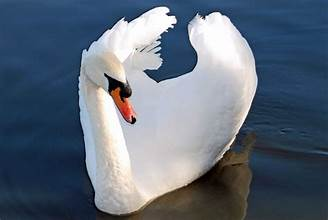
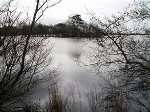
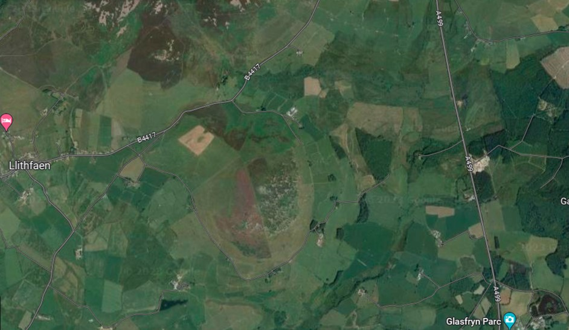

Llyn Glasfryn
Un tro roedd gan ddewin ffynnon yn ardal Llangybi. Roedd rhaid cadw’r caead ar y ffynnon bob amser neu byddai’r ffynnon yn gorlifo a boddi cartrefi’r ardal. Doedd neb yn cael dŵr o ffynnon Grasi yn ymddangos fel alarch y dewin rhag ofn iddynt anghofio rhoi y caead yn ôl arni. Yn ystod cyfnod heb law roedd y ffermwyr cyfagos yn poeni nad oedd digon o ddŵr iddyn nhw a’u hanifeiliaid. Aeth tad Grasi i ofyn i’r dewin am ddŵr o’i ffynnon. Meddyliodd y dewin yn hir a phenderfynu gadael i’r ffermwyr ddefnyddio y ffynnon petai Grasi yn ei gwarchod a gofalu rhoi’r caead yn ôl pan fyddai rhywun yn dod i nôl dŵr.
Roedd Grasi yn eneth ddiog a doedd hi ddim yn hapus efo’i gwaith newydd. Yn ystod y dyddiau cyntaf roedd Grasi wrth ei bodd. Roedd yn cael gorwedd ar y bryn yn yr haul cynnes, heb ddim i’w wneud ond rhoi y caead yn ôl. Roedd hyn yn llawer gwell na helpu ei mam i sgubo’r tŷ a golchi llestri.
Un diwrnod daeth ffrind i chwarae efo Grasi a dechreuodd y ddwy hel llus a mynd ymhellach o’r ffynnon. Ar ôl i’w ffrind fynd adref daliodd Grasi ati i hel llus. Bu’n casglu a bwyta nes ei bod wedi blino’n lân. Yna syrthiodd i gysgu. Lleoliad Llyn Glasfryn o lethrau’r Eifl Pan ddeffrodd roedd yr haul wedi machlud. Cofiodd yn sydyn am y ffynnon. Rhedodd ar garlam trwy’r grug ac yna safodd yn stond gan rwbio ei llygaid. Doedd y ffynnon ddim yna, dim ond llyn mawr. Eisteddodd a dechrau crïo.
Lleoliad Llyn Glasfryn o lethrau’r EiflYna, yn sydyn, teimlodd law ar ei hysgwydd. Roedd y dewin wedi dychwelyd. ‘Rydw i am dy gosbi di am hyn yr eneth ddiog,’ meddai’r dewin. ‘Gan nad oes cartref gen ti rwan rhaid i ti fyw yma am byth. Roedd dy gartref di lle mae’r llyn. Felly mae’n rhaid i ti fyw yn y llyn neu ar y llyn.’ Cododd ei fys main a chrafu ei ben. ‘Wn i,’ meddai.’ Fe gei di fod yn alarch yn nofio ar wyneb y dŵr ddydd a nos nes y byddi di farw.’ A dyna fu hanes Grasi. Bu’n nofio ar y llyn am lawer blwyddyn a hyd yn oed heddiw mae rhai yn dweud eu bod yn clywed sŵn crïo yn dod o waelod Llyn Glasfryn yn awr ac yn y man.